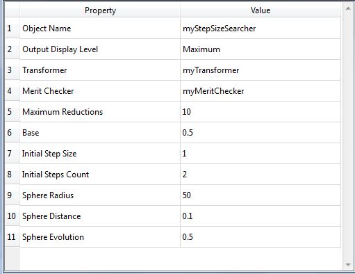

Armijo Step Size Searcher
Class Name
Location in Objects Pane
- Methods > Step Size Searcher > Armijo
Properties

Object Name
- Name of the object in Rt
- Allowable characters are upper-case and lower-case letters, numbers, and underscore (“_”).
- The name is unique and case-sensitive.
Output Display Level
- Determines the level of messages and outputs of this object to print in the Output Pane.
- The higher the level of outputs, the more time it takes to run the analysis.
- Indicates the transformer object which transforms random variables in original space to the standard normal space or vice versa.
Merit Checker
- Determines the merit checker function to guide the length of steps in a sequence of iteration points to the design point, in a balanced manner.
Maximum Reductions
- Determines the maximum number of reductions apllied to length of steps.
Base
- Determines the coefficient to reduce the length of steps.
Initial Step Size
- Determines the initial step size, typically 0.5 to 1.
Initial Steps Count
- Determines the maximum number of steps using initial steps, typically 2.
Sphere Radius
- The radius of an initial hyper-sphere, within which the trial point is restricted to stay, typically set as R=50.0. This choice depends on the expected reliability index.
Sphere Distance
- Distance of hyper-sphere surface which trial points are checked with, typically set as 0.1.
Sphere Evolution
- Since the design point may not be located inside the hyper-sphere, the radius may need to be increased,the radius is increased by the amount specified by the Evolution parameter, typically set as 0.5
Output
- This object guides the length of steps in a sequence of iteration points to the design point, in a balanced manner.
- For more information, see Der Kiureghian-Zhang (1994).
Right-click Menu
Remove
References
- Der Kiureghian, A., Zhang, Y., & Li, C.-C. (1994). Inverse reliability problem. Journal of Engineering Mechanics, 120(5), 1154–1159